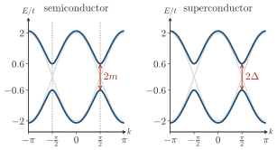

Page 1 of 12 of this session
1.1 Why quantum materials, and why now
Why do the materials of the next technologies need quantum mechanics, and not classical physics, to be understood? In this section we look at what quantum materials already do for us, and we arrive at two gaps that look alike in a spectrum. One gap is already felt by single electrons, and the other exists only because the electrons pair, so it needs the many-body formalism of this session.
Before we start with the mathematics, let us say a few words about why this subject is relevant. Every period of human technology has been named after the material that defined it. There was the stone age, the copper age and, very recently, the silicon age, which gave rise to the whole information revolution in which we live now. If we look ahead, it is plausible that the next period will be a quantum age, in which our technology directly uses quantum mechanical behavior at microscopic scales instead of avoiding it. Quantum materials are the physical platform for this change, since they are the systems that realize quantum matter in the lab.
At the end of this session we should be able to describe what a quantum material is and to explain why we need quantum mechanics, and not classical physics, to understand it. We should also be able to work with the basics of second quantization, and to rationalize why mean-field theory gives rise to spontaneous symmetry breaking.
Quantum materials are already the basis of technologies that we use every day. Superconductors make MRI machines possible, since they generate the very large magnetic fields that nuclear magnetic resonance needs. Semiconductors are the basis of solar cells, on which a large part of our plan for renewable energy depends. In the future, almost every serious platform for quantum computing, whether it is built from superconductors, semiconductors or a combination of the two, is in the end a quantum materials problem.
Let us also mention briefly that this is connected to several of the UN Sustainable Development Goals. Quantum computing is connected to the goals on economic growth, industry and innovation. Solar energy and superconducting or topological electronics with low power consumption are connected to the goals on clean energy and climate action. The international and cross-disciplinary character of the field is connected to the goal on partnerships. None of this is mathematics, but it is good to remember why we do the mathematics.
In the course we will see two kinds of examples, and it is useful to compare them. Semiconductors are in some sense the easy case, since their properties follow from single-particle physics, which you have likely seen already in an earlier course on materials. Superconductors are the harder case, because to understand them we have to account for how electrons interact with each other collectively, and this is the many-body formalism that we start to build in this session. The spectra in Schematic 1.2 show a gap of each kind.

g1_two_gaps.py
Both spectra have a gap of the same size around \(E=0\).
Which statement about the origin of the two gaps is correct?
Show the answers
- A. ✓ True
This is true. The lattice of the semiconductor can be diagonalized one electron at a time, so its gap is a single-particle result. The superconducting gap exists only because many electrons pair together.
- B. ✗ False
This is false. In the two spectra above the gaps have the same size, \(1.2\,t\), so the size does not tell them apart. Take a metal and keep only the single-particle hopping. We get a Fermi surface and no gap at all, however large the attraction between the electrons would be, because the attraction is not in that Hamiltonian. The right panel comes from a bilinear Bogoliubov-de Gennes Hamiltonian only because we put \(\Delta\) in by hand. In a real superconductor \(\Delta\) is the mean field of the attraction between the electrons, and finding it needs the many-body formalism of this session.
- C. ✗ False
This is false. A chain with onsite energies \(\pm m\) and hopping \(t\) has a gap \(2m\) at the zone edge with no interaction at all, which is \(1.2\,t\) for \(m=0.6\,t\). In contrast, switching off the attraction between the electrons closes the superconducting gap.
We can diagonalize the lattice of the semiconductor with one electron at a time. For the superconductor we need the many-body formalism of this session.
- In Section 2.7 the Bloch Hamiltonian of a chain with two sites per cell gives a band gap from single-particle physics alone.
- The superconducting gap \(2\Delta\) comes from the Bogoliubov-de Gennes Hamiltonian of Section 5.8, and Section 5.9 shows that it opens for any dispersion.
- In Section 3.10 a gap of the first kind, from a staggered potential on the honeycomb lattice, is compared with a topological gap that a single electron also feels.